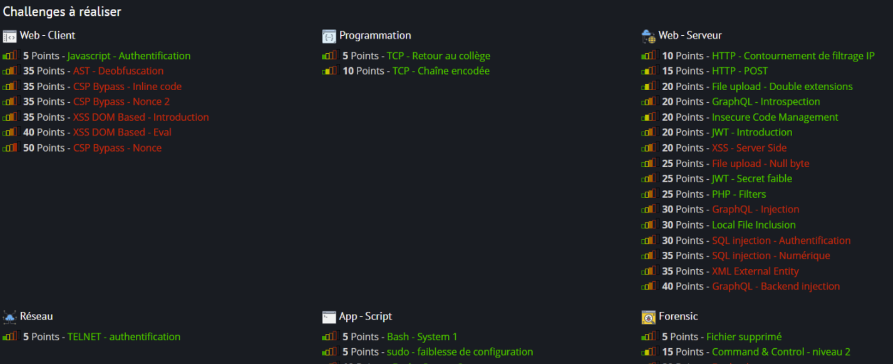
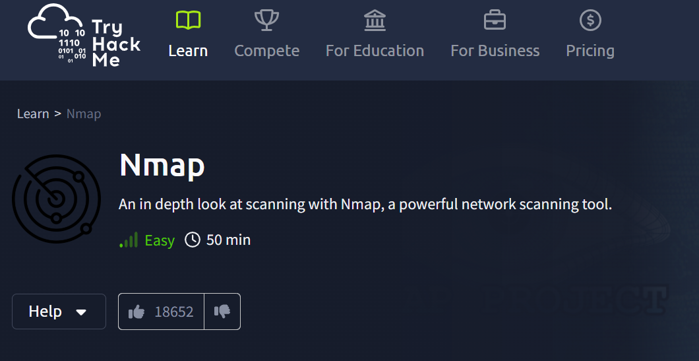

📌 Préparation du Personnel
La phase de préparation a permis aux participants de se familiariser avec les outils et méthodologies essentielles pour l'exercice Cyber Humanum Est.
💬 Communication & Coordination
Un salon Discord dédié a été mis en place pour permettre aux équipes de :
- 🗣️ Échanger sur les stratégies et les rôles.
- 📢 Suivre les annonces importantes des organisateurs.
- 🔄 Partager des ressources techniques et documentations.
🎯 Challenges Root-Me
Les participants ont eu accès à des challenges techniques sur Root-Me, répartis en plusieurs catégories :
- 🌐 Web Client & Web Serveur : XSS, SQL Injection, JWT, File Upload.
- 🖧 Réseau : TELNET - Authentification.
- 📜 Programmation & Scripts : Bash, Powershell, Perl, Docker.
- 🔬 Forensic : Analyse de fichiers, Supply Chain Attacks.

🛠️ Modules TryHackMe
Les équipes ont également suivi des modules sur TryHackMe, notamment :
- 🕵️ Introduction à l’utilisation de Nmap pour la cartographie réseau.
